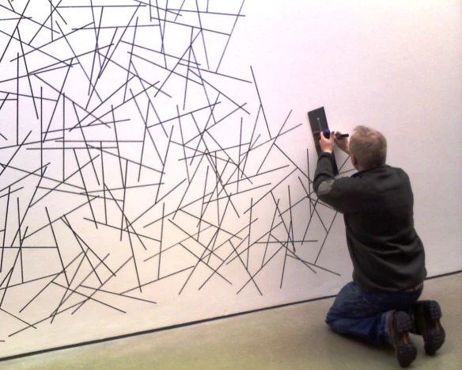

class: center, middle # Computation as Creative Practice --- # Module 1: Hello Worlds 1. About this workshop series 2. What is computational art? 3. Thinking like a computer 4. ✨ Dinner ✨ 5. Intro to p5.js 6. Wrap-up & homework --- class: center, middle # About this workshop series --- # Who made this? I am a curator from regional WA, working voluntarily to build communities of interest around computational art. Over the course of five workshops, we will: - gain familiarity with basic programming concepts. - create simple visuals, as well as integrating video, sound, sensors and mobile devices. - understand and reflect on the social and political contexts in which these technologies are embedded. This syllabus is based on materials from many open-source projects, referenced in individual course modules, but especially from the [Processing Foundation Education Portal](https://processingfoundation.org/education) and [Toronto Mesh](https://tomesh.net). This project has been assisted by the Vancouver Arts Centre Supported Workshop Program and the Australian Government through the Australia Council for the Arts, its arts funding and advisory body. --- class: center, middle # What is computational art? --- # Some examples | | | |------------------------------------------------------------------------------------|------------|------------| | [Generative art](http://reas.com/) | [Interactive installation](https://www.lozano-hemmer.com/pulse_room.php) | | [Data visualisation](http://hint.fm/wind/) | Projection | | VR |[Performance](https://youtu.be/2l1kJCktuAo)| |[Code poetry](http://wwwwwwwww.jodi.org/) | [Net art](https://anthology.rhizome.org/) | |[Software](https://lav.io/projects/zoom-deleter/) | Games | |Motion graphics| [Fabrication technologies](https://www.liaworks.com/theprojects/filament-sculptures/) | |[Performance](https://www.newmuseum.org/exhibitions/view/amalia-ulman-excellences-perfections) | [Gifs/animation/glitch](https://www.newrafael.com/websites/) | | NFTs | [Art made with p5.js](https://showcase.p5js.org/#/) | <br/> - Stan Vanderbeek, artist in residence, Bell Labs, [1960s](https://youtu.be/mg_DowyLuT8). - Ramon Llull, Catalan monk, [14th century](http://cramer.pleintekst.nl/00-recent/words_made_flesh/html/words_made_fleshch2.html#x5-110002). - [Knitters ?](https://en.wikipedia.org/wiki/Jacquard_machine) --- # Activity - Break into partners. - As a team, devise a set of instructions to create a drawing. Write out the instructions on paper provided. - Switch instructions with another pair. You create a drawing based on their instructions, and they create a drawing based on yours.  --- # Context - [Sol Le Witt, Wall Drawing #273, 1975, installed at Dia Beacon in 2007](https://imageobjecttext.com/2014/02/05/just-following-instructions/) - [Yoko Ono, A Book of Instructions and Drawings](https://monoskop.org/images/6/64/Ono_Yoko_Grapefruit_A_Book_of_Instructions_and_Drawings_2000.pdf) - [Casey Reas, Chance Operations (video)](https://vimeo.com/45851523) --- # Investigating p5.js - Open the [online editor](https://editor.p5js.org/) - What are we looking up? What is the difference between `setup()` and `draw()`? - Try using some of [these lines of code](https://github.com/alisay/alisay.github.io/tree/main/docs/_articles/module-1/commands.md) to figure it out. --- class: center, middle # Wrap-up & Homework --- # Recap - Discussed the meaning of computation in the context of art. - Practiced writing instructions for a machine. - Touched upon the basics of p5.js _Questions?_ --- # Homework Next session we will dive into using p5.js, exploring variables and interaction. - Stay behind if you need help getting set up on your local machine. - Go for a stroll in your local area and find an object to bring tomorrow.